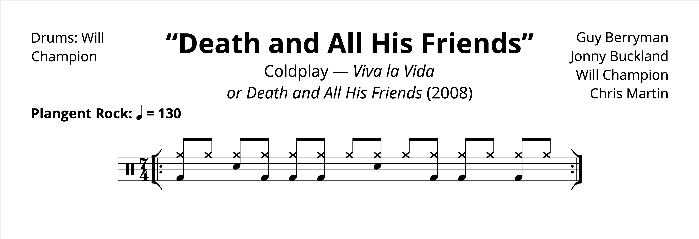

Groove(s): “Glass of Water” + “Death and All His Friends” — Will Champion with Coldplay
Posted on May 1, 2022

I bet you never thought Coldplay would make it onto the blog!
Well, I’ll admit, it’s a bit of a guilty pleasure of mine. And as I was giving some older music in my library a listen, I rediscovered the oft-forgotten Coldplay EP Prospekt’s March, released only a few months after the monumental Viva la Vida. The EP has an absolute gem of a deep cut called “Glass of Water” — I enjoyed the song quite a bit when I was younger, and all these years later I released that the chorus of the track is actually in 7/4!
I know it’s not very exciting, but I think it’s worth taking a look at any mainstream release that’s in a time signature like 7/4. I actually think it’s tough to notice the time signature, and I’m quite fond of songs that have time signature changes that are hard to notice.
Part of the obfuscation comes from the backbeats; instead of mashing a 2 & 4 feel into 7/4 (à la “Money”), there’s a bit of syncopation going on in the second half of the measures.
The story of Prospekt’s March is that the release is made up of outtakes from Viva la Vida. It makes me wonder if and how “Glass of Water” would have fit onto that LP. I decided to listen to it again for the first time in years, and wouldn’t you know… the finale “Death and All His Friends” also has a section in 7/4!
I guess every band has a 7/4 phase, and Coldplay had one in 2008. I decided to look at the groove from “Death and All His Friends” to see how it compares:
I wonder if the two numbers are related in any way — 7/4 is just too conspicuous of a time signature for it to be a coincidence. But maybe it is.
“Glass of Water” on Songwhip.
“Death and All His Friends” on Songwhip.
Tags: 2022 • Groove • Coldplay • Will Champion